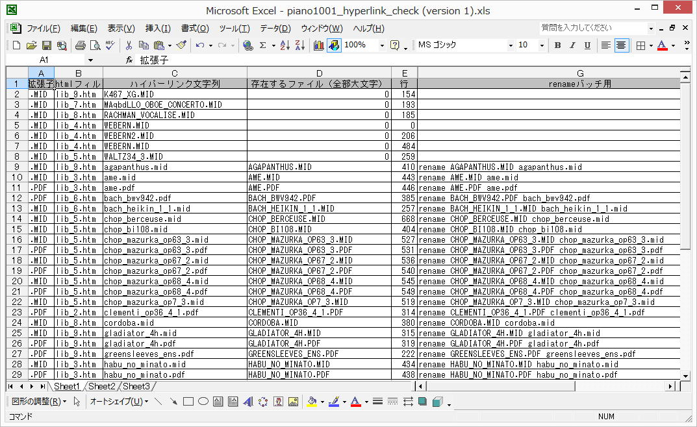

| TOP | weblog | TIPS | Works | リンク |
| ソフトウェア 音符くん２号 ピアノを始めたころは、まだ、楽譜へのチャレンジ心があってバカなソフトウェアを作ってみました。 一応、一通り動作するまで作りこんだけど、連続実行するとMIDIの割り込み処理のコントロールがいまいち上手くexceptionしちまって、解決できずに途中で投げ出したソフトウェア「音符くん２号」です。 ソースコードは探せば残ってると思うけど探す気もなく、仕上げる気力もありません。 下は「音符くん２号」の紹介ビデオ。 WindowsとLinuxがごちゃになったサイトの杯パ^リンクをチェックするアプリ 作製の背景はweblogの「2012-11-20 プログラム作成リハビリです 」に書いてます。 完成させてファイル名をハイパーリンクのファイル名にリネームするSQLServerのテーブルを作成して、Excelに展開して、renameのバッチを作りました。 ハイパーリンク数約１０５０、ファイルが存在しないのが６個、大文字小文字違いが４３個ありました。 こんなもの、手作業でチェックしてたら何日かかるだろうか？ アプリでやっつけて良かったと思う。 でも、汎用化しない。 こんな事情を抱えている人、殆どいないでしょ。 部品だけC#の独自（僕の）クラスライブラリに追加します。 i下がその結果。（クリックすると拡大します）  |